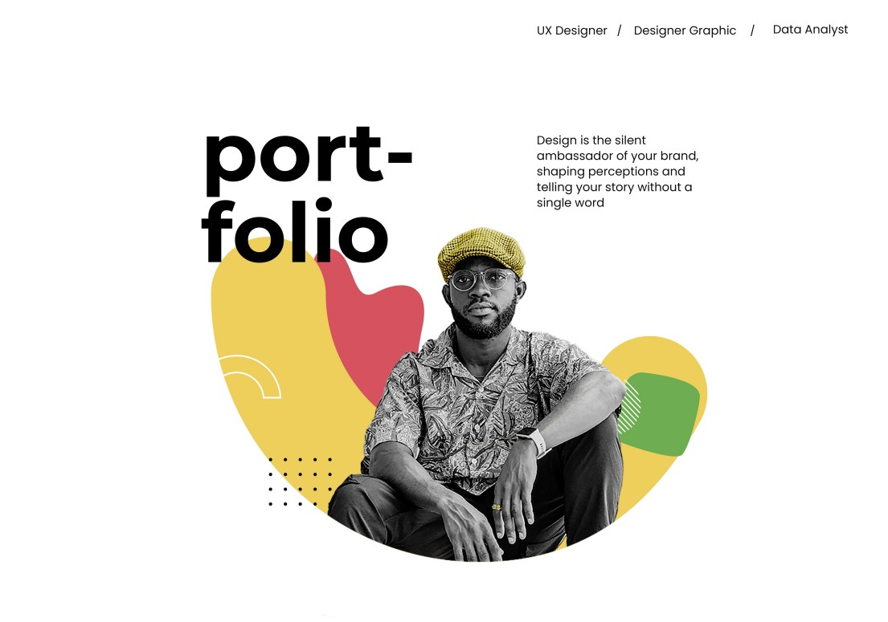
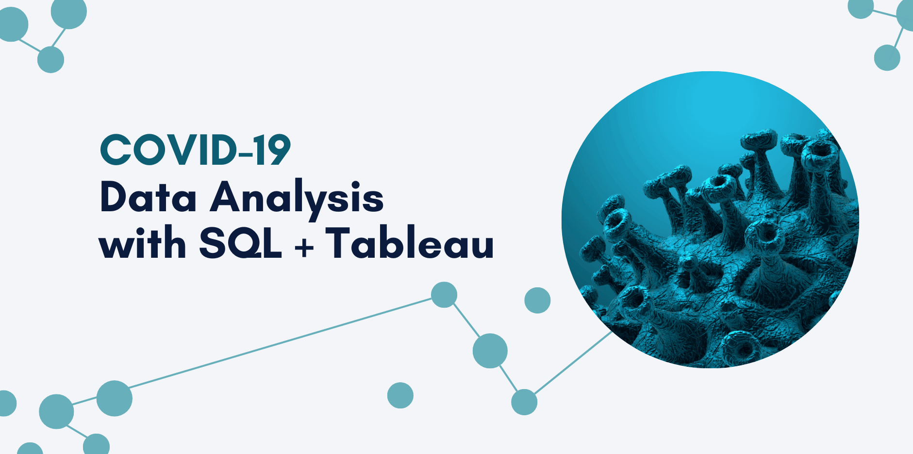
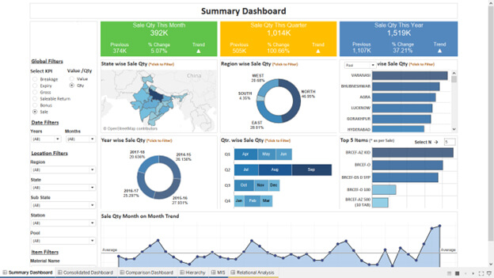

April 25, 2024
I’m a data analyst who loves transforming data into actionable insights.
I specialize in SQL, Excel, Python, and data visualization, building projects that turn
complex data into clear stories that drive decisions.


This project explores global COVID-19 data using SQL to analyze infection rates, death percentages, and vaccination trends. Through data exploration techniques such as GROUP BY, aggregations, and filtering, the project uncovers patterns and insights about how the pandemic affected different regions.

This project focuses on cleaning and preparing raw data using SQL. The process included removing duplicates, standardizing formats, handling missing values, and transforming data to ensure it was ready for accurate analysis.

This project features an interactive Tableau dashboard built to visualize global COVID-19 trends. The dashboard displays key metrics such as total cases, deaths, and infection rates by country, allowing users to explore how the pandemic evolved across different regions.
This project focuses on cleaning and exploring a movies dataset using Python. By using libraries such as Pandas and NumPy, I prepared the dataset by handling missing values, correcting inconsistencies, and transforming the data.
Exploratory data analysis was then performed to identify trends in movie revenue, budgets, ratings, and industry performance.